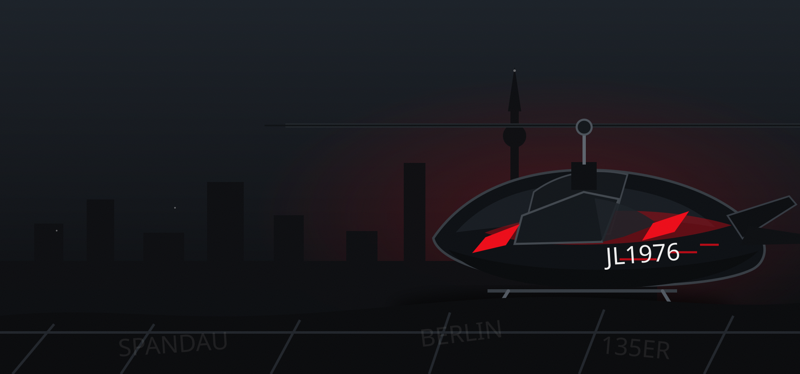
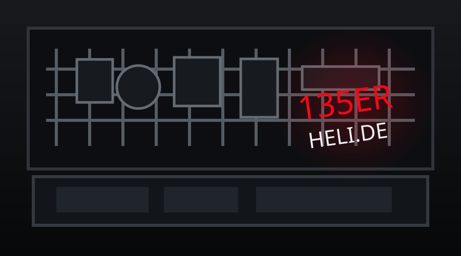

135ER RC HELI
FLIGHT · SETUP · CONTROLLER

FLIGHT · SETUP · CONTROLLER
3D-PRINT · CAD · P2S · MODS
ESP32 · PI · CAN · TOOLS
TECHNIK · AUTOMATION · SENSORIK
RC-Helipilot aus Berlin. Technik, Ideen und Projekte aus echter Werkstattpraxis.
Von RC-Heli, Controller-Hardware und 3D-Druck bis Embedded, Fahrzeuge, Server, UE5 und Grow-Technik.
MEHR ÜBER JL1976 →
Rathaus Spandau, reale Geodaten, eigene Playermodels und Unreal-only Pipeline.
FDM-druckbares RC-Modell mit Klappflügeln und 4S-Antrieb.
ESP32-S3-CAN-Gateway und Live-Dashboard für den Touran 1T3.